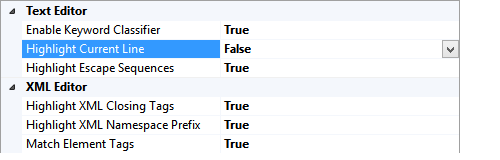

Customizable
You can enable/disable specific Viasfora features from the Tools -> Options
dialog in Visual Studio.


You can also customize per-language settings.
You can also customize per-language settings.